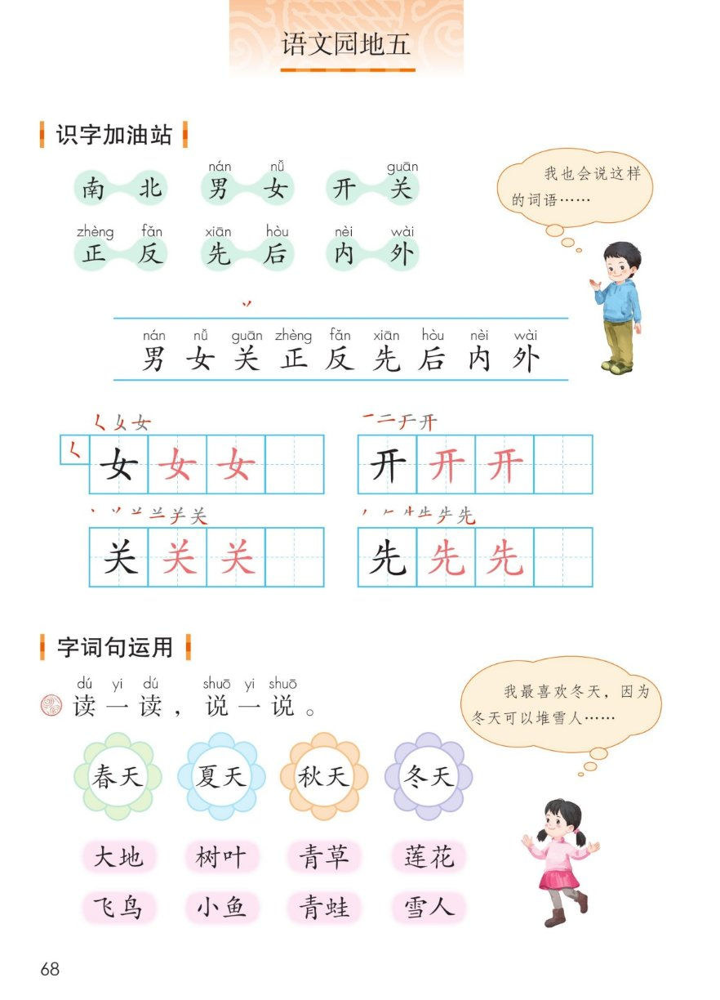
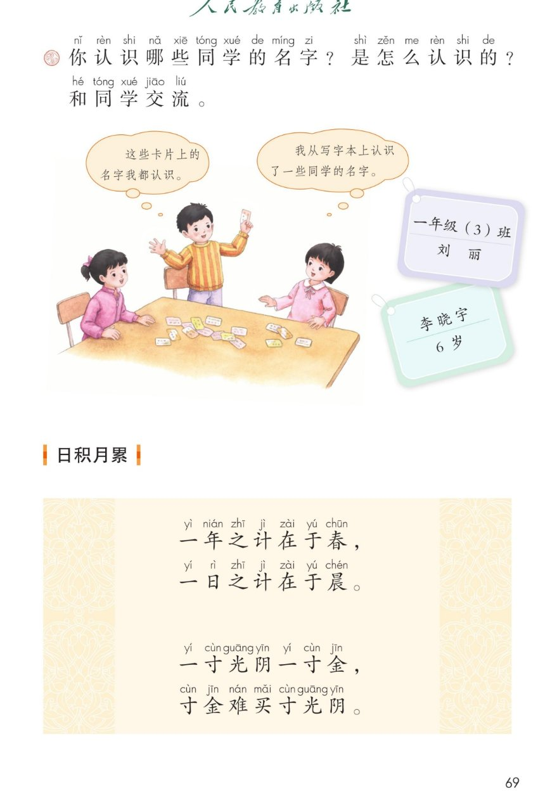
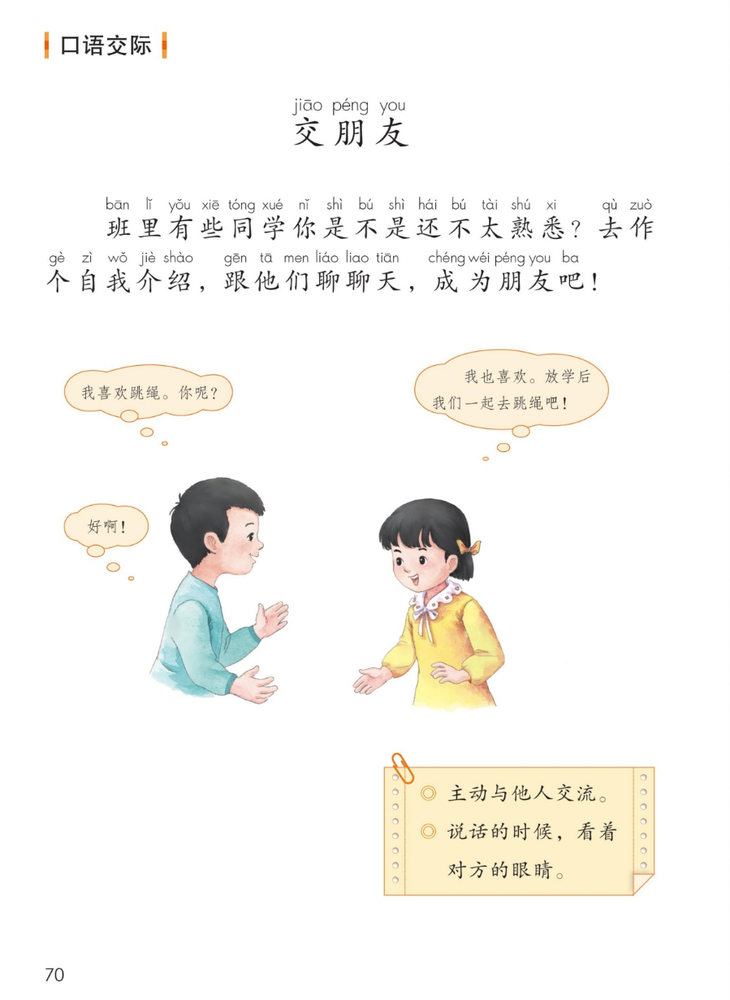
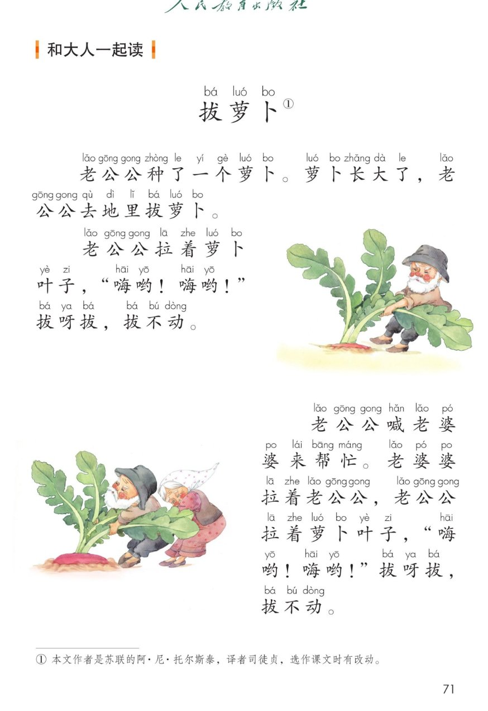
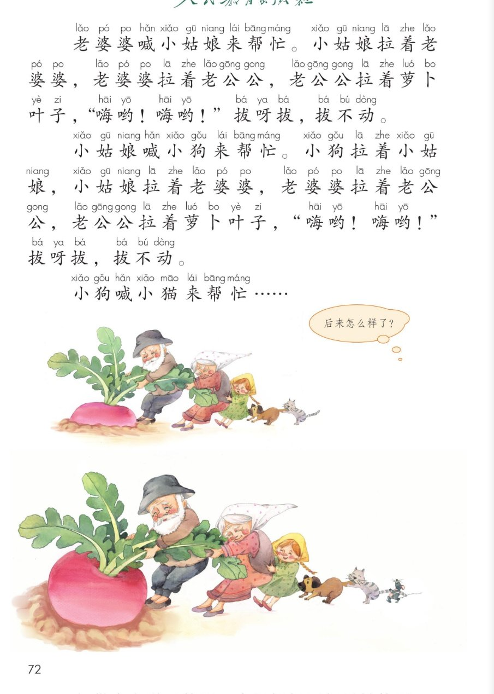

×
🔊 手机听不到声音怎么办？
① 先把手机
媒体音量调大 ，确认没开静音、没连蓝牙耳机；在微信里打开的，点右上角「⋯ → 用浏览器打开」。
② 还是没声音？到应用商店免费下载
Microsoft Edge 浏览器 （它自带朗读发声），用它打开本页面就能出声。
③ 换了 Edge 仍然没声音，说明这部手机的
硬件/系统不支持 网页朗读（多为老旧机型）；近几年买的新手机一般都能正常播放。
→ 打开声音自检
统编版 · 一年级上册 · 第五单元 · 语文园地五
语文园地五
反义词、四季词语、惜时名言、交朋友、拔萝卜。
6 组反义词 日积月累 口语交际 和大人一起读 闯关 8 题
这个园地学什么： 认识 6 组意思相反的词，写好「女、开、关、先」；用四季词语说一句话；
背 4 句珍惜时间的名言；学会主动交朋友；再和大人一起读《拔萝卜》。🌼
课本第 68 页 点一组读一组
课本气泡： 「我也会说这样的词语……」—— 你还知道吗？
大小 、多少 、上下 、左右 、来去 、高低 。这样的词叫反义词 。💡
识字条 · 连起来读
男 女 关 正 反 先 后 内 外 —— 里面藏着 4 组 反义词呢
课本第 68 页田字格 点卡听笔顺
课本第 68 页 点花朵、点词语都能听
课本气泡： 「我最喜欢冬天，因为冬天可以堆雪人……」我会说： 春天青草 绿了／夏天莲花 开了／秋天树叶 黄了／冬天雪人 笑了。🗣️
课本第 69 页 和同学交流
课本原题： 你认识哪些同学的名字？是怎么认识的？和同学交流。这些卡片上的名字我都认识 。」 💬「我从写字本上认识了一些同学的名字 。」
小任务： 看一看课程表、作业本、座位牌，今天新认识 3 个同学的名字 ，大声念给同桌听。📛
课本第 69 页 点一句读一句
🎵 四句连读
🐢 放慢背一背（每句读两遍）
意思一点通： 春天把一年的事安排好，早晨把一天的事安排好；
时间比金子还贵，金子买不回时间 。⏰ 所以——早上不赖床，今天的事今天做！
课本第 70 页 点气泡听对话
课本原题： 班里有同学你是不是还不太熟悉？去作个自我介绍 ，跟他们聊聊天 ，成为朋友吧！🤝
课本两条要点： ◎ 主动与他人交流。 ◎ 说话的时候，看着对方的眼睛。👀
给你一个开场白： 「你好，我叫____，我喜欢____，你呢？」——
先介绍自己，再问对方，聊天就开始了。😊
课本第 71~72 页 点一段读一段
🎵 全文连读
🔁 跟读模式（读完一段停一停）
课本气泡： 「后来怎么样了？ 」—— 接着编一编吧：
小猫又喊来小老鼠……大家一起「嗨哟！嗨哟！」，萝卜拔出来啦 ！🥕道理： 一个人拔不动，大家齐心 就能拔出来（人多力量大）。
点题目可以听题，点选项就判对错，答完自动算分
已经答 0 题，答对 0 题。
点图放大

第 68 页 · 识字加油站 · 字词句运用

第 69 页 · 认名字 · 日积月累

第 70 页 · 口语交际 · 交朋友

第 71 页 · 和大人一起读 · 拔萝卜（一）

第 72 页 · 拔萝卜（二）